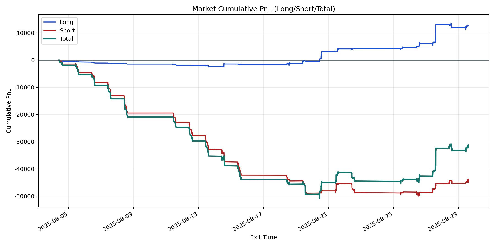
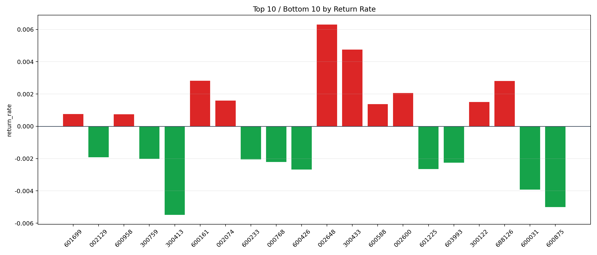

| repo_root | /home/haoranyou/data/output/alpha0.4_1w_5s_3ticks_index_filter/index_weights_300 |
|---|---|
| period_months | 1 |
| period_label | 2025-08-04_to_2025-08-29 |
| start_time | 2025-08-04 09:50:32 |
| end_time | 2025-08-29 14:44:07 |
| n_trades | 5741 |
| n_symbols | 51 |
| total_pnl | -32133.539799999897 |
| long_total_pnl | 12684.025650000029 |
| short_total_pnl | -44817.56544999993 |
| total_entry_notional | 53561606.0 |
| long_entry_notional | 12040574.0 |
| short_entry_notional | 41521032.0 |
| total_return_rate | -0.0005999360773461478 |
| long_return_rate | 0.0010534402803387968 |
| short_return_rate | -0.0010793943043130511 |
| top_symbols_by_return | ["002648", "300433", "600161", "688126", "002600", "002074", "300122", "600588", "601699", "600958"] |
| bottom_symbols_by_return | ["300413", "600875", "600031", "600426", "601225", "603993", "000768", "600233", "300759", "002129"] |

